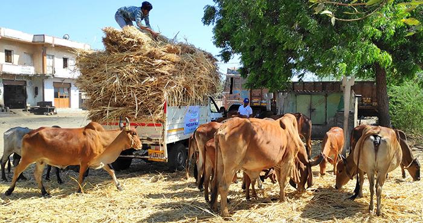
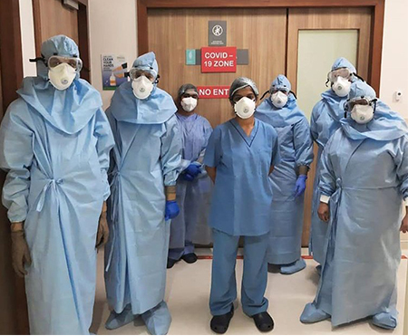
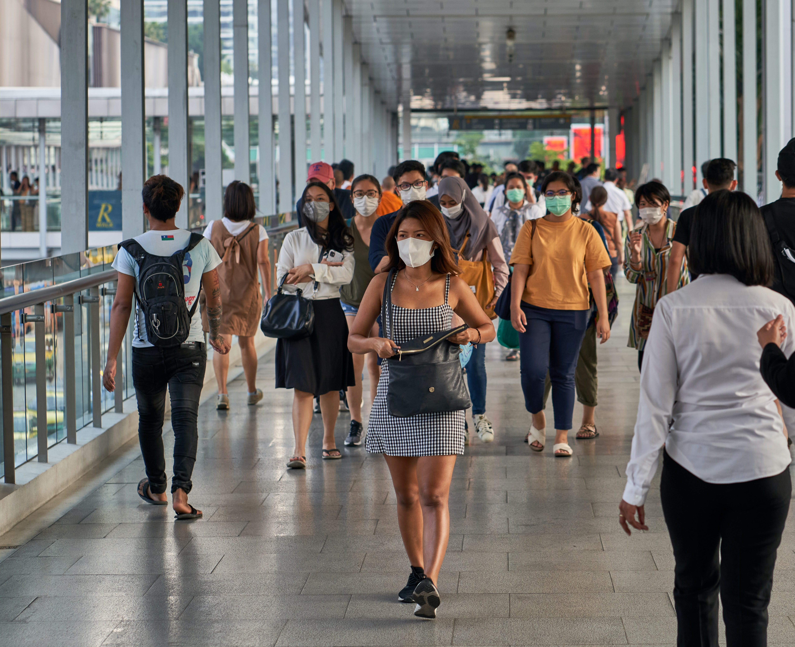
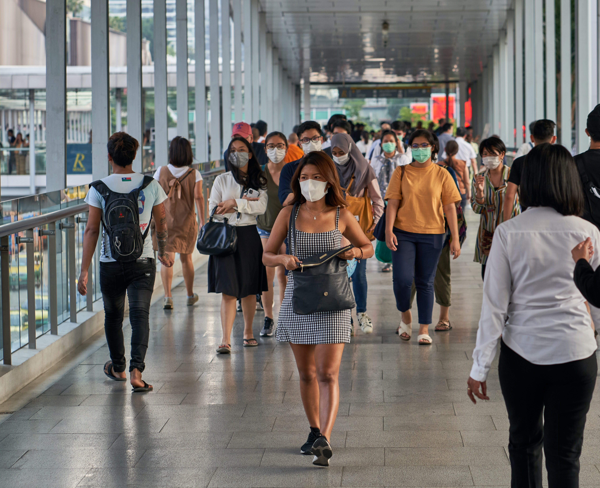

The entire help family joined forces to strengthen and fuel the nation’s fight against COVID-19. With a 24x7, multi-pronged approach, Reliance quickly mobilised on-the-ground efforts to ensure the nation wins the battle against COVID-19 and worked relentlessly during the global coronavirus pandemic to be at the service to the people of India. Reliance leveraged all of its resources – human as well as material – to help India overcome the threat posed by the virus.
Realising that during the lockdown marginalised and under-resourced communities across the country would need support with daily essentials, Reliance Foundation quickly launched a programme to distribute food to the needy. Mission Anna Seva is the largest meal distribution programme undertaken by a corporate foundation anywhere in the world. To date, Reliance Foundation has distributed over 7.5 crore meals to vulnerable communities and frontline workers.
The beneficiaries of Mission Anna Seva included daily wage earners, slum dwellers, urban service providers, factory workers, and residents of old-age homes and orphanages. It also provided meals to frontline workers such as junior medical staff, police personnel and security forces. Under this programme, Reliance Foundation provided cooked meals, ready-to-eat food packets, food coupons and dry ration kits to families and bulk ration to community kitchens across 18 States and three Union Territories.
Compassion for All: Care for stray animals

Stray animals had a tough time finding food due to the fall in human activity during the lockdown. Extending its care to animals as well, provision was made for the distribution of food for stray animals. Animal food was provided to partner organisations which look after stray animals. Grain feed was provided for birds and fodder kits were also provided for livestock in rural areas. Over one lakh animals were provided care and treatment during the pandemic.
Strengthening India: Setting up health infrastructure support

Reliance Foundation demonstrated its commitment and capacity to rise up to the situation during the response to the COVID-19 crisis. In collaboration with the Brihanmumbai Municipal Corporation (BMC), Reliance Foundation set up the first, COVID-19 dedicated hospital in India in just two weeks in March 2020. With the focus on treating patients with COVID-19, all beds are equipped with the required infrastructure, bio-medical equipment such as ventilators, pacemakers, dialysis machine and patient monitoring devices.Reliance built a fully-equipped isolation facility in Lodhivali, Maharashtra and handed it over to the district authorities for use. Reliance Foundation also supported the setting up of a quarantine ward for COVID-19 suspected patients at Spandan Holistic Mother-And-Child Care Hospital, Deonar, Chembur in Mumbai. A 135-bed COVID quarantine facility was also set up in Surat.


 
